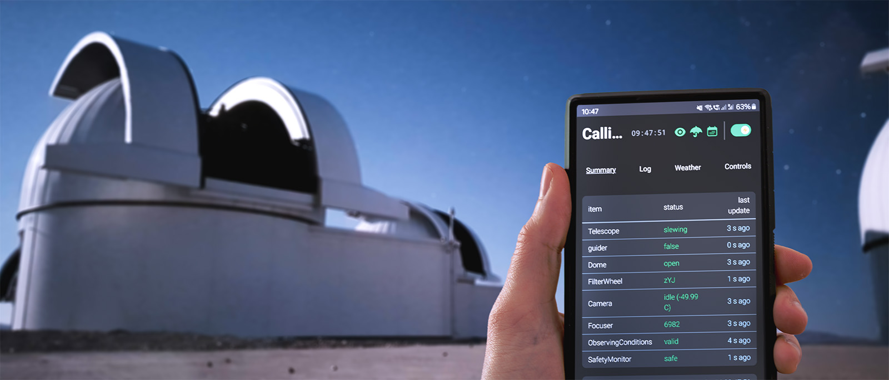
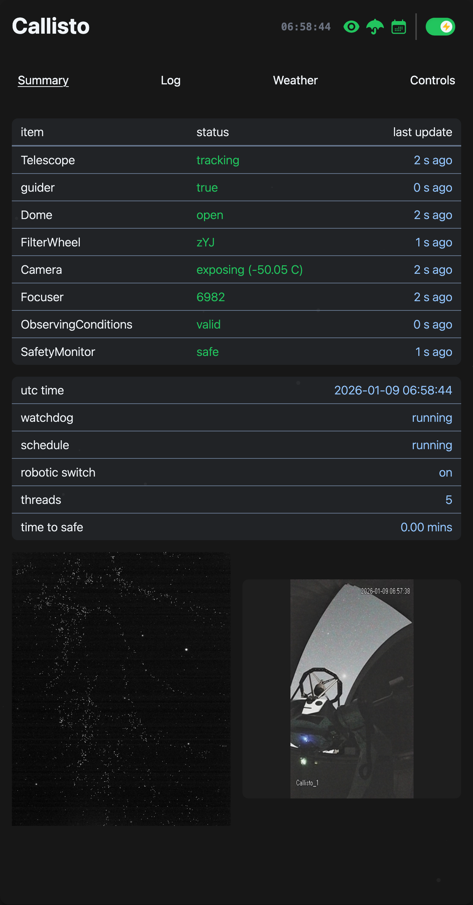
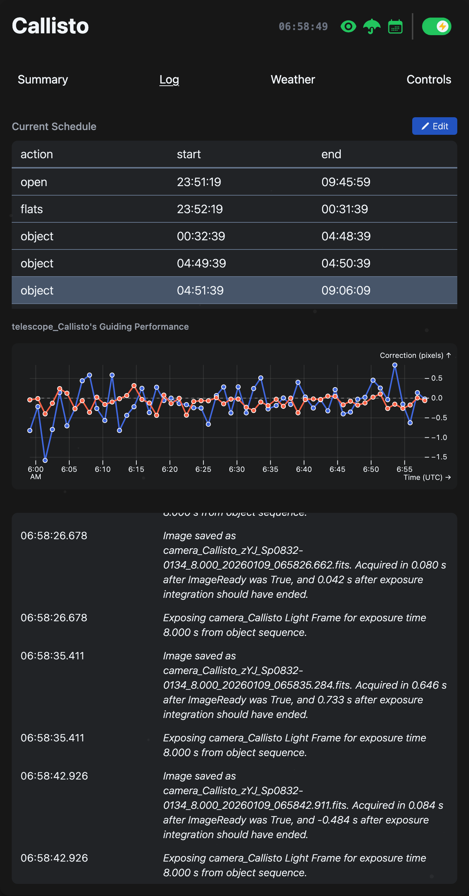
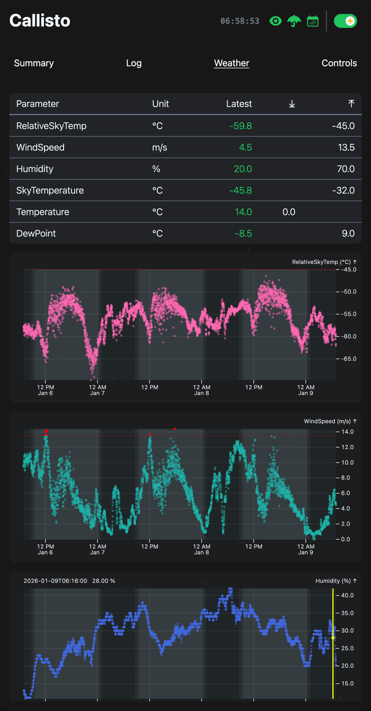
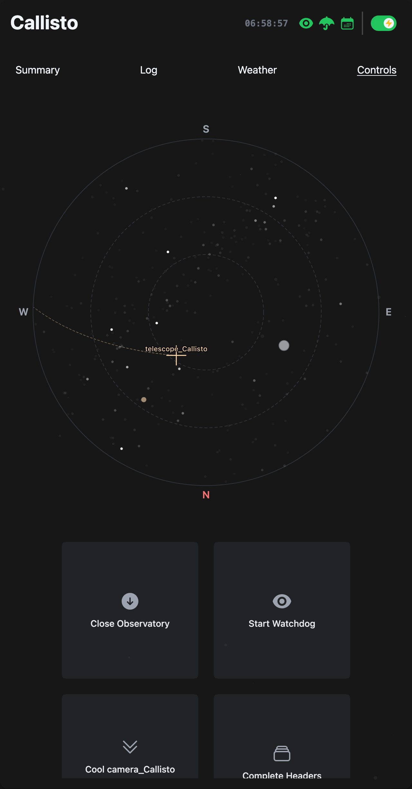
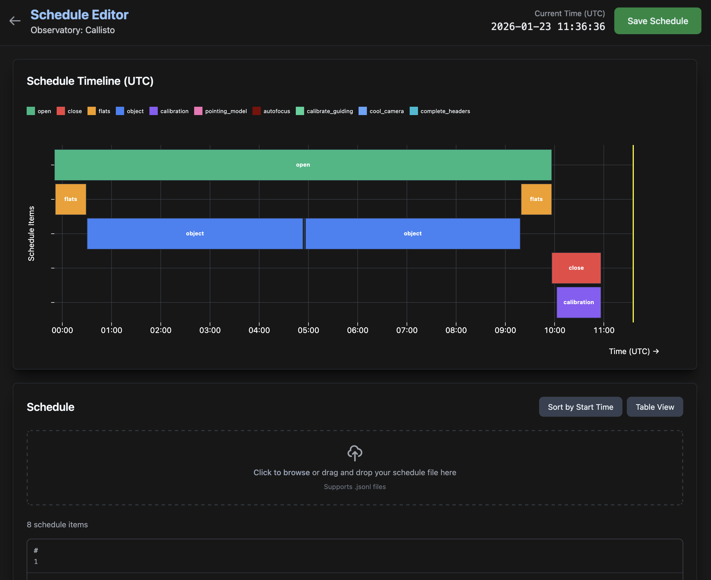
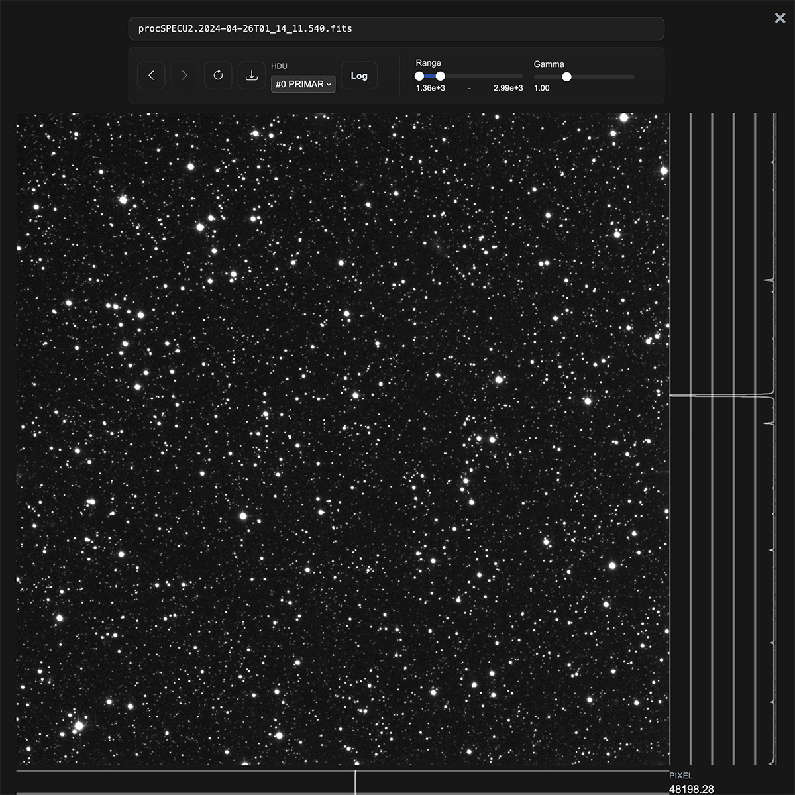

Astra Documentation#
{kind=link}

Astra (Automated Survey observaTory Robotised with Alpaca) is an open-source, cross-platform Python system for the sustained, fully autonomous operation of astronomical observatories.
Astra controls observatory devices via the ASCOM Alpaca protocol. It can execute prescheduled observatory actions under continuous weather safety supervision, such as object observations with plate-solve-based pointing correction using an offline Gaia–2MASS catalogue, PID-controlled autoguiding, sky-flats, autofocusing, and non-sidereal tracking of solar system bodies and TLE-defined satellites.
A FastAPI web interface provides a browser UI, alongside REST and WebSocket APIs for real-time status monitoring, image previews, and interaction with the SQLite-backed database.
Used By#
Currently, Astra is deployed at multiple professional observatories delivering reliable, unattended survey operations, including:
Screenshots#
|
 Observatory overview |
 System logs |
 Weather monitoring |
 Controls tab |
|
 Schedule editor |
 FITS viewer |
Developed by#
Astra is developed by a team of astronomers and software engineers at Queloz Group, ETH Zürich, Switzerland, in collaboration with the SPECULOOS consortium.
Note
This documentation is a work in progress. We are continuously updating and improving it. If you have any questions or suggestions, please feel free to reach out to us via GitHub Issues.
We appreciate your feedback and contributions to make this software and documentation better.
Citation#
If you use Astra in published research, please cite it as:
@misc{https://doi.org/10.5281/zenodo.18890151,
doi = {10.5281/ZENODO.18890151},
url = {https://zenodo.org/doi/10.5281/zenodo.18890151},
author = {Pedersen, Peter P. and Degen, David and Garcia, Lionel and Zúñiga-Fernández, Sebastián and Sebastian, Daniel and Schroffenegger, Urs and Queloz, Didier},
keywords = {observatory control software, ocs, astronomy, control software, ground-based, telescope, camera, ascom, survey telescope, photometry, imaging},
title = {Astra},
publisher = {Zenodo},
year = {2026},
copyright = {GNU General Public License v3.0 only}
}
and
@inproceedings{10.1117/12.3105437,
author = {Peter P. Pedersen and David Degen and Lionel Garcia and Urs Schroffenegger and Daniel Sebastian and Sebasti{\'a}n Z{\'u}{\~n}iga-Fern{\'a}ndez and Brice-Olivier Demory and Elsa Ducrot and Micha{\"e}l Gillon and Matthew J. Hooton and Cl{\`a}udia Jan{\'o}-Mu{\~n}oz and James McCormac and Mathilde Timmermans and Amaury H. M. J. Triaud and Didier Queloz},
title = {{Astra: an open-source fully autonomous robotic observatory control software}},
volume = {14155},
booktitle = {Software and Cyberinfrastructure for Astronomy IX},
editor = {Jorge Ibsen and Valentina Alberti},
organization = {International Society for Optics and Photonics},
publisher = {SPIE},
pages = {141552U},
keywords = {observatory control software, robotic, ground-based, observatory, robotic astronomy, plate solving, autoguiding, autofocus},
year = {2026},
doi = {10.1117/12.3105437},
URL = {https://doi.org/10.1117/12.3105437}
}
Zenodo DOI: 10.5281/zenodo.18890151, Proceedings DOI: 10.1117/12.3105437, Arxiv DOI: 10.48550/arXiv.2607.12898